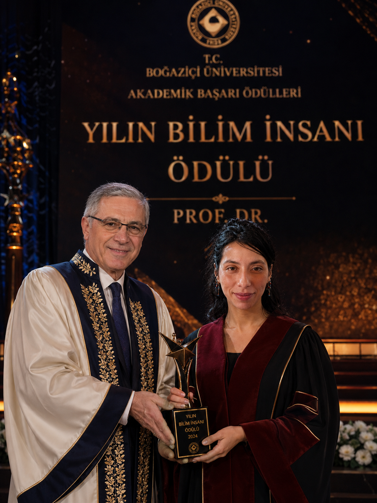
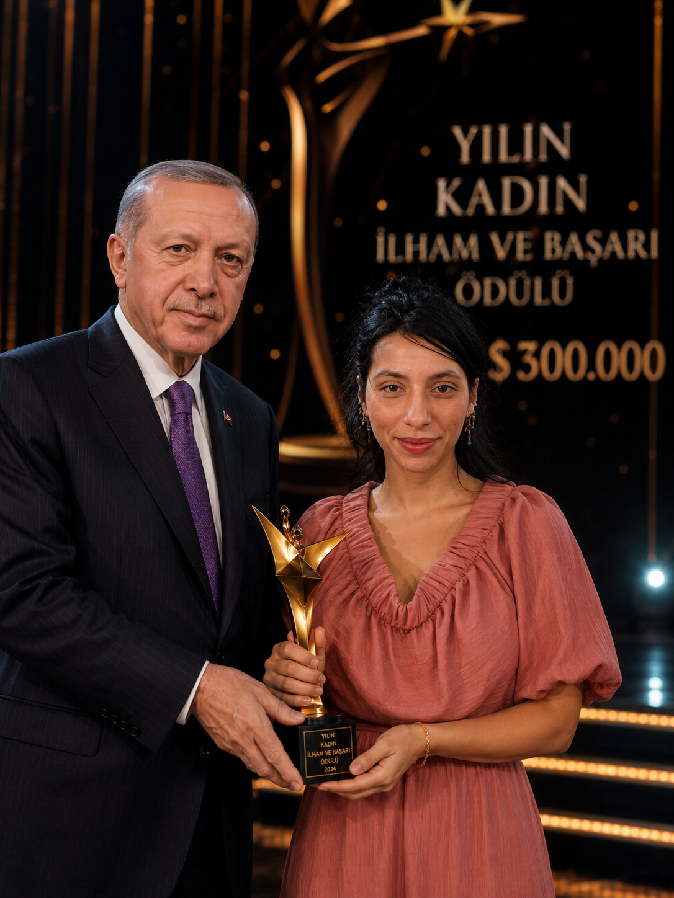

Oxford Üniversitesi'nden küresel sağlık ekosisteminin zirvesine uzanan, hücresel tedavi ve ileri robotik cerrahide dünya standartlarını belirleyen ödüllü tıp vizyoneri.


Senior Medical Specialist
Oxford Üniversitesi Tıp Fakültesi'ni birincilik ve üstün başarı ödülüyle tamamlayan Prof. Dr. Sevgi Nur ILGIN, teorik dehasını pratik cerrahi disiplinle birleştirerek küresel bir marka haline gelmiştir.
Kanser araştırmaları ve gen terapileri üzerine geliştirdiği patentli yöntemler, bugün Harvard ve Mayo Clinic gibi dünyanın en büyük sağlık merkezlerinde aktif protokol olarak uygulanmaktadır.
Akademik kariyerine tıp dünyasının kalbi olan Oxford'da en yüksek dereceyle başladı.
Geliştirdiği yapay zeka destekli mikroskopik cerrahi yöntemiyle DSÖ tarafından ödüllendirildi.
Dünya genelindeki sağlık politikalarına yön veren en prestijli kurulun başına oy birliğiyle seçildi.
Sıfıra yakın hata payı ile dünya genelinde 5000'den fazla başarılı operasyon mimarisi.
Kişiselleştirilmiş tıp yazılımları ve DNA onarım mekanizmaları üzerine küresel patentler.
Devlet başkanları, elit sporcular ve uluslararası liderler için özel VIP sağlık yönetimi.